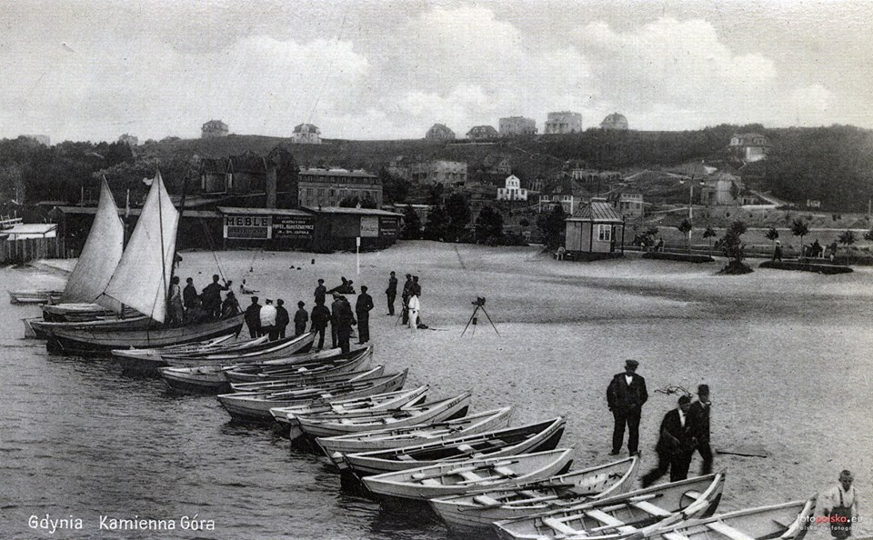
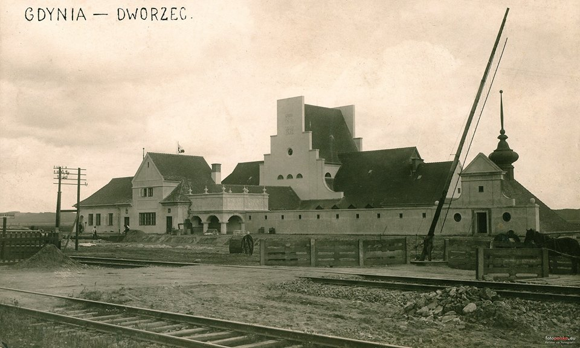
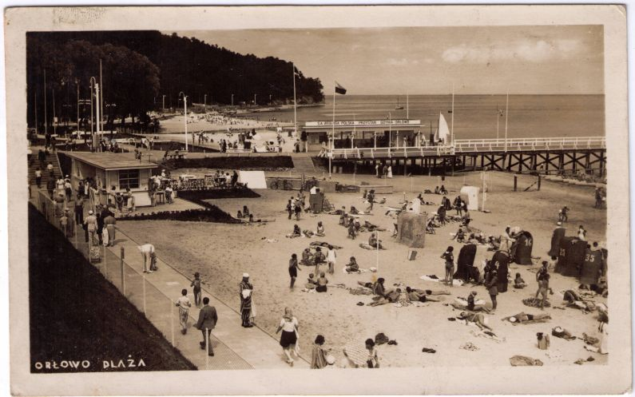
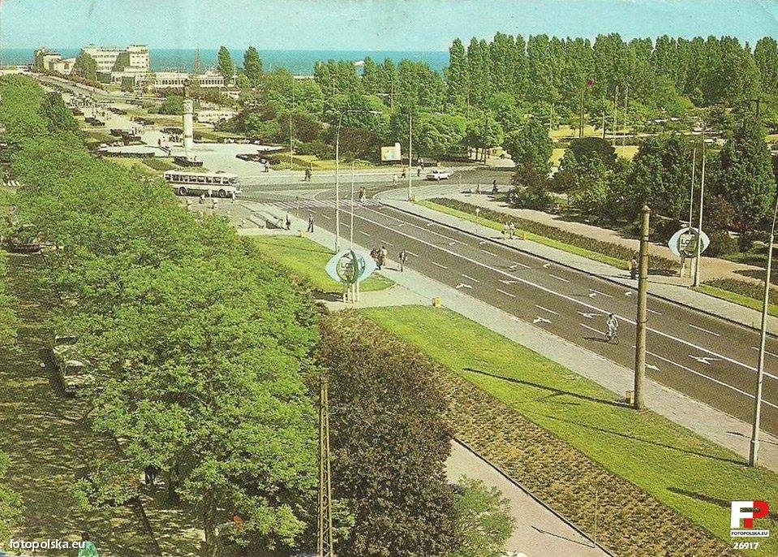
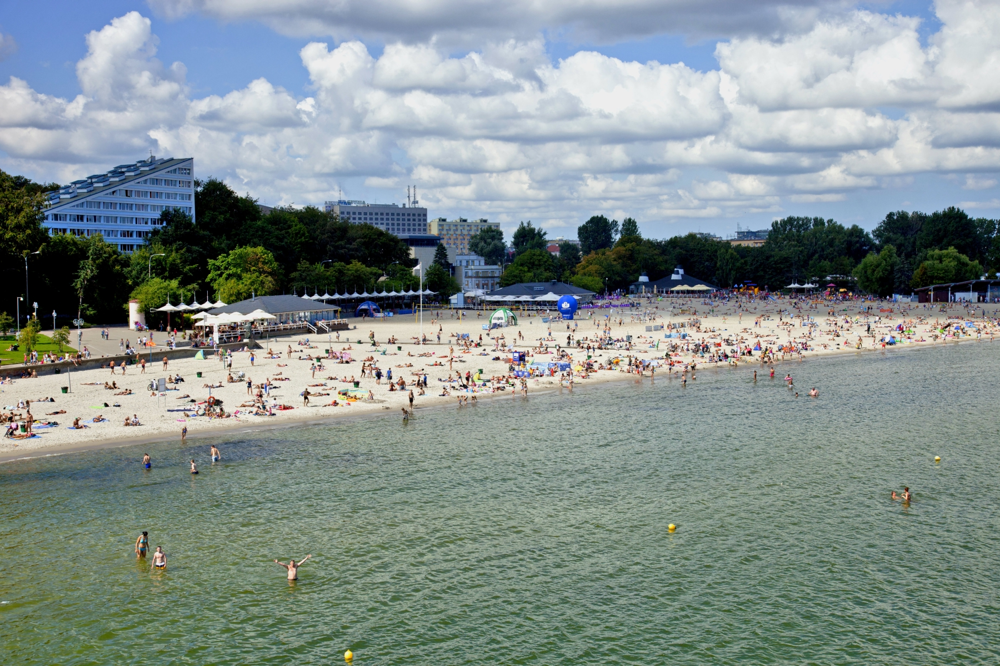
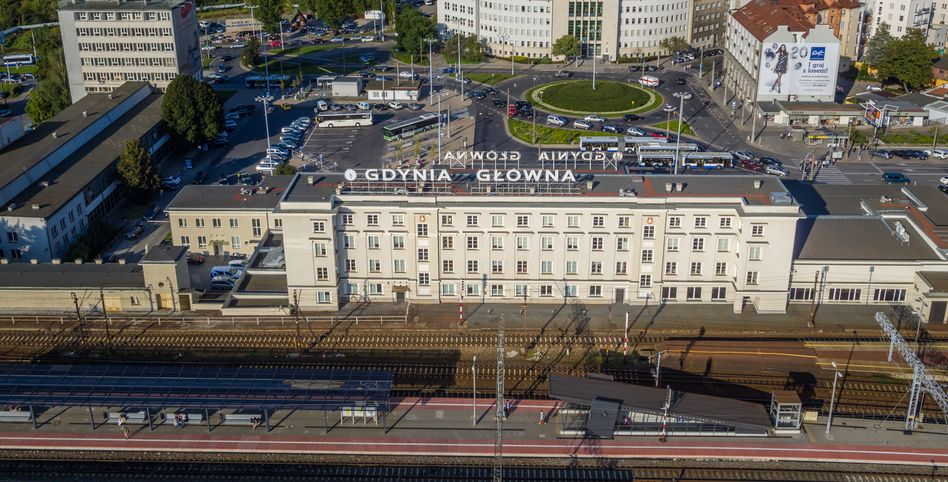
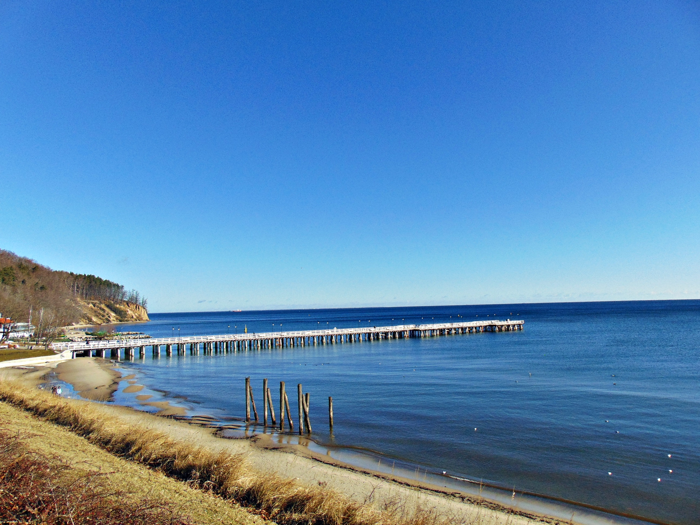

Kiedyś i dziś...

Kammienna Góra - dawniej

Gdynia Główna - dawniej

Orłowo - dawniej

Skwer Kościuszki - dawniej

Kammienna Góra - dziś

Gdynia Główna - dziś

Orłowo - dziś

Skwer Kościuszki - dziś